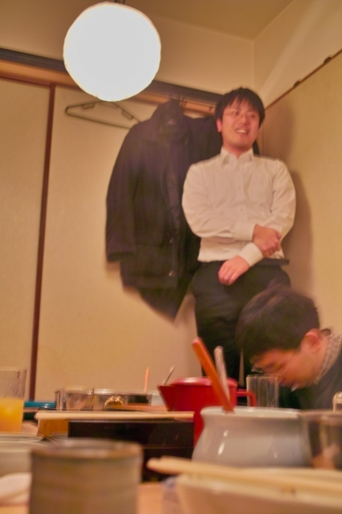

| ・平成21年度学位記授与と追いコン (H22.03.25) | |||
去年は修士6名，学部5名でしたが、今年は修士2名，学部5名が卒業しました．ん？なんだか数が合わない？ |
|||
|
来月からは社会人です！ |
すでに酔ってます＠S浦くん | ||
|
下座がココやからな！ |
最近小食なんです | ||
|
鏡割りで食べ過ぎた．．． |
まずは1回目の乾杯 | ||
|
注いだり |
注がれたり | ||
|
到着！ |
では改めて乾杯！ | ||
|
卒業生，現役に向けて一言「信用が大事です！」 |
人間性の権化，でも得がたいものなんです． | ||
|

静まれッオレの左腕！ |
「違うんですよ」が聞けなくなるのは寂しいもの | ||
|
田中さん，いや田中先生．では田中さんどうぞ． |
来年も鏡割りに参加します． | ||
|
話すネタを検索中 |
論文投稿とエントリーシート締切りの両立が目下の課題ッス！ | ||
|
まずは就活をビシッと決めます． |
D3なんで，本気だしていきますよ． | ||
|
解散！ |
|||